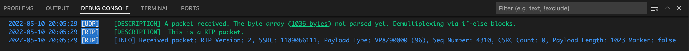

7. SRTP PACKETS COME¶
In previous chapter, we completed the initialization of SRTP ciphers process successfully.
When a new packet comes in, the "AddBuffer" function in backend/src/agent/udpclientsocket.go looks for which protocol standard this packet rely on.
RTP packet structure
0 1 2 3
0 1 2 3 4 5 6 7 8 9 0 1 2 3 4 5 6 7 8 9 0 1 2 3 4 5 6 7 8 9 0 1
+-+-+-+-+-+-+-+-+-+-+-+-+-+-+-+-+-+-+-+-+-+-+-+-+-+-+-+-+-+-+-+-+
|V=2|P|X| CC |M| PT | Sequence Number |
+-+-+-+-+-+-+-+-+-+-+-+-+-+-+-+-+-+-+-+-+-+-+-+-+-+-+-+-+-+-+-+-+
| Timestamp |
+-+-+-+-+-+-+-+-+-+-+-+-+-+-+-+-+-+-+-+-+-+-+-+-+-+-+-+-+-+-+-+-+
| Synchronization Source (SSRC) identifier |
+=+=+=+=+=+=+=+=+=+=+=+=+=+=+=+=+=+=+=+=+=+=+=+=+=+=+=+=+=+=+=+=+
| Contributing Source (CSRC) identifiers |
| .... |
+-+-+-+-+-+-+-+-+-+-+-+-+-+-+-+-+-+-+-+-+-+-+-+-+-+-+-+-+-+-+-+-+
| Payload |
+-+-+-+-+-+-+-+-+-+-+-+-+-+-+-+-+-+-+-+-+-+-+-+-+-+-+-+-+-+-+-+-+
Our RTP packet struct in backend/src/srtp/header.go and backend/src/srtp/packet.go:
from backend/src/srtp/header.go and backend/src/srtp/packet.go
type PayloadType byte
type Extension struct {
Id byte
Payload []byte
}
type Header struct {
Version byte
Padding bool
Extension bool
Marker bool
PayloadType PayloadType
SequenceNumber uint16
Timestamp uint32
SSRC uint32
CSRC []uint32
ExtensionProfile uint16
Extensions []Extension
RawData []byte
}
type Packet struct {
Header *Header
HeaderSize int
Payload []byte
RawData []byte
}
Click to expand Wireshark capture (Received): First SRTP Packet
Important note: As you can see at the end of the block, Wireshark couldn't specify the protocol of the packet as RTP. It shows RTP/SRTP packets as raw UDP packets.
Frame 568: 1068 bytes on wire (8544 bits), 1068 bytes captured (8544 bits) on interface lo0, id 0
Null/Loopback
Internet Protocol Version 4, Src: 192.168.***.***, Dst: 192.168.***.***
User Datagram Protocol, Src Port: 52993, Dst Port: 15000
Data (1036 bytes)
Data: 806010d66b18660546dfb57f81a378739249bef2f2f5552907340c6229373297f3c52e7e…
[Length: 1036]
Important notice: You can ask "The chapter is about SRTP but you show me RTP without the 'S'?". Because SRTP (Secure Real-time Transport Protocol), a secure version of RTP (Real-time Transport Protocol). Header is in clear text, Payload part is encrypted and authenticated we will discuss further.
In this context, we can check out rtp.IsRtpPacket function. This function checks:
- Take the second byte (with index 1) which contains M (1 bit) (marker) and PT (7 bits) (PayloadType)
- Use "and" bitwise operator on this byte and 0b01111111 (it sets 8. bit as zero, takes other 7 bits)
- This result byte data (ordinally) is between 0 and 35, or between 96 and 127. This byte represents the SRTP Header's PayloadType value.
If this buffer part complies with these conditions, we can say "this packet is an SRTP protocol packet", then we can process it with SRTP protocol's methods.
from backend/src/rtp/rtpheader.go
func IsRtpPacket(buf []byte, offset int, arrayLen int) bool {
// Initial segment of RTP header; 7 bit payload
// type; values 0...35 and 96...127 usually used
payloadType := buf[offset+1] & 0b01111111
return (payloadType <= 35) || (payloadType >= 96 && payloadType <= 127)
}
Here is the console output when the server received first "expected" SRTP packet.

Sources:
7.1. Processing incoming SRTP package¶
We have determined that incoming packet is an RTP packet via rtp.IsRtpPacket function at "AddBuffer" function.
- Call "DecodePacket" function in backend/src/rtp/packet.go. This method only decodes the byte array buffer to RTP header and packet objects, it doesn't decrypt the payload yet. Our RTP packet object has to store decoded/parsed values, and also the complete raw data, because we will need the raw state of the data while decryption.
- Forward the decoded RTP packet to the UDPClientSocket's "RtpDepacketizer" channel. This channel is listened by runRtpDepacketizer() function of UDPClientSocket object, shown below:
from backend/src/agent/udpclientsocket.go
func (ms *UDPClientSocket) AddBuffer(buf []byte, offset int, arrayLen int) {
logging.Descf(logging.ProtoUDP, "A packet received. The byte array (<u>%d bytes</u>) not parsed yet. Demultiplexing via if-else blocks.", arrayLen)
...
} else if rtcp.IsRtcpPacket(buf, offset, arrayLen) {
logging.Descf(logging.ProtoRTP, " This is an RTP packet.")
rtpPacket, offset, err := rtp.DecodePacket(buf, offset, arrayLen)
...
logging.Infof(logging.ProtoRTP, "Received packet: %s\n", rtpPacket)
ms.RtpDepacketizer <- rtpPacket
} else {
...
}
- This method in an infinite loop, when a message forwarded to "RtpDepacketizer" channel, it receives the forwarded SRTP packet, decrypts it via "DecryptRTPPacket" function in backend/src/srtp/srtpcontext.go
- Sets the decrypted payload to rtpPacket.Payload property
from backend/src/agent/udpclientsocket.go
func (ms *UDPClientSocket) runRtpDepacketizer() {
defer close(ms.RtpDepacketizer)
defer close(ms.vp8Depacketizer)
go ms.vp8Decoder.Run()
for rtpPacket := range ms.RtpDepacketizer {
decrypted, err := ms.SRTPContext.DecryptRTPPacket(rtpPacket)
rtpPacket.Payload = decrypted
if err != nil {
logging.Errorf(logging.ProtoDTLS, "Error while decrypting: %s", err)
continue
}
switch rtpPacket.Header.PayloadType {
case rtp.PayloadTypeVP8:
ms.vp8Depacketizer <- rtpPacket
}
}
}
7.2. Decoding the SRTP package¶
We use "DecryptRTPPacket" function in backend/src/srtp/srtpcontext.go to decrypt the SRTP payload. You can find the original code here.
from backend/src/srtp/srtpcontext.go
func (c *SRTPContext) DecryptRTPPacket(packet *rtp.Packet) ([]byte, error) {
s := c.getSRTPSSRCState(packet.Header.SSRC)
roc, updateROC := s.nextRolloverCount(packet.Header.SequenceNumber)
result, err := c.GCM.Decrypt(packet, roc)
if err != nil {
return nil, err
}
updateROC()
return result[packet.HeaderSize:], nil
}
- If we revisit the same screenshoot above, we can see that this packet has some attributes:
- Version: 2
- SSRC: (some Synchronization Source value)
- Payload Type: VP8/90000 (96)
- Sequence Number: (Some increasing sequence number)
- CSRC Count (we don't use)
- Payload length
- We may receive multiple different streams (with a unique SSRC identifier per stream)
- At the "SRTPContext" object which defined in "UDPClientSocket" object, we have "srtpSSRCStates" map that stores "srtpSSRCState" objects per different SSRC values.
- At this "srtpSSRCState" struct, we store the ssrc, index, and rolloverHasProcessed values:
from backend/src/srtp/srtpcontext.go
- In the "DecryptRTPPacket" function, we get or create an srtpSSRCState state object for our packet's SSRC value (packet.Header.SSRC) via "getSRTPSSRCState" function
- Call "nextRolloverCount" of our state object to calculate next rollover count value (roc), and get rollover update function
-
Call "Decrypt" function of our SRTP GCM object in the context in backend/src/srtp/cryptogcm.go with our RTP packet object and calculated roc value
- Here, our ciphertext is packet.RawData (not only the Payload, whole raw packet byte array, because AEAD encryption should calculate the authentication data from whole bytes including clear text header bytes)
- Create a byte array (dst) that has same length as ciphertext array
- Copy the ciphertext context to dst. Because we will pass pointer of dst array, contents will be changed and we need to backup original ciphertext
- We "know" that our aeadAuthTagLen is 16
- Crop the dst array by taking first (ciphertext length - aeadAuthTagLen)
- Calculate the initialization vector which is special for this RTP packet via "rtpInitializationVector" function, using packet header's SSRC, roc, and packet header's SequenceNumber, then XOR it with our srtpSalt
- Decrypt the bytes by AEAD.Open. We gave parameters:
- dst: dst[packet.HeaderSize:packet.HeaderSize] (starting pointer of payload's first byte in the array that includes the header)
- nonce: Our calculated IV value
- ciphertext: Our ciphertext's payload (encrypted) part, starting from header ends (ciphertext[packet.HeaderSize:])
- additionalData: Our ciphertext's header (not encrypted) part (ciphertext[:packet.HeaderSize]).
- Important notice: It will decrypt the encrypted payload part, but with checking AEAD authentication with additional header data. This will give an "authentication error" if you give wrong or missing parameters. For example, on my first try, I didn't copy the ciphertext into dst variable, passed an allocated but empty byte array. But I realized that, the AEAD.Open checks authentication in the dst parameter.
from backend/src/srtp/cryptogcm.go
if _, err := g.srtpGCM.Open(
dst[packet.HeaderSize:packet.HeaderSize], iv, ciphertext[packet.HeaderSize:], ciphertext[:packet.HeaderSize],
); err != nil {
return nil, err
}
from backend/src/srtp/cryptogcm.go
func (g *GCM) Decrypt(packet *rtp.Packet, roc uint32) ([]byte, error) {
ciphertext := packet.RawData
dst := make([]byte, len(ciphertext))
copy(dst, ciphertext)
aeadAuthTagLen := 16
resultLength := len(ciphertext) - aeadAuthTagLen
if resultLength < len(dst) {
dst = dst[:resultLength]
}
iv := g.rtpInitializationVector(packet.Header, roc)
if _, err := g.srtpGCM.Open(
dst[packet.HeaderSize:packet.HeaderSize], iv, ciphertext[packet.HeaderSize:], ciphertext[:packet.HeaderSize],
); err != nil {
return nil, err
}
copy(dst[:packet.HeaderSize], ciphertext[:packet.HeaderSize])
return dst, nil
}
- Call the "updateROC" function which we get previously
- Our encrypted Payload is now decrypted and as clear text.
7.2. Decoding the VP8 Video Content¶
- If the packet's PayloadType is in PayloadTypeVP8 type, it forwards to the UDPClientSocket's "vp8Depacketizer" channel. This channel is listened by Run() function of VP8Decoder object in backend/src/transcoding/vp8.go, discussed in chapter 8. VP8 PACKET DECODE.